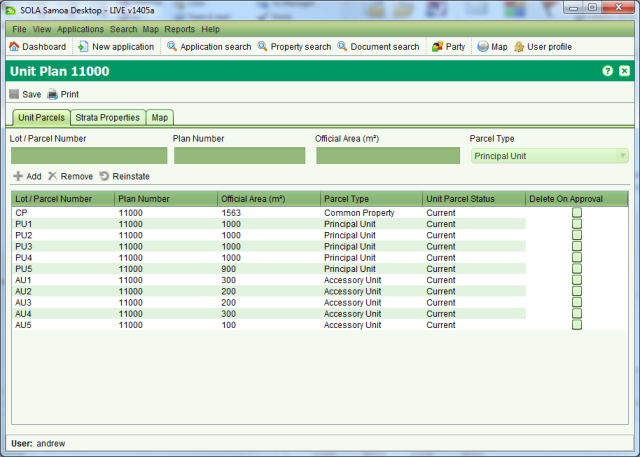
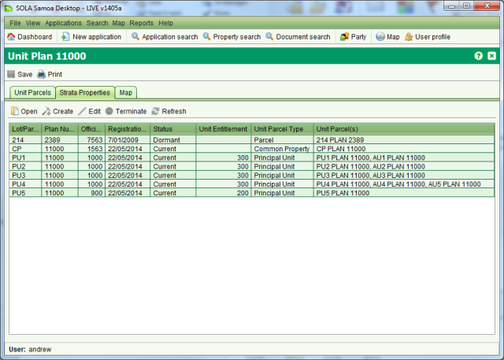

The Unit Titles screen allows you to quickly view all parcels and titles that are part of a
Unit Title Development. You can access this screen from Property Details using the Open
Units tool. This tool will appear beside the Print Options dropdown in Property Details if
the property you are viewing is part of a Unit Title Development (i.e. a Principal Unit,
Common Property or the underlying property). The Unit Titles screen will also display when
processing a Record Unit Plan, Create Unit Titles or Cancel Unit Plan service.
Open
Units tool. This tool will appear beside the Print Options dropdown in Property Details if
the property you are viewing is part of a Unit Title Development (i.e. a Principal Unit,
Common Property or the underlying property). The Unit Titles screen will also display when
processing a Record Unit Plan, Create Unit Titles or Cancel Unit Plan service.

Unit Parcels tab on Unit Titles
The Unit Parcels tab on Unit Titles lists all of the unit parcels that are part of this Unit Title Development including the Common Property parcel.

Strata Properties tab on Unit Titles
The Strata Properties tab lists all properties associated with the Unit Title Development
including the underlying property. To view details for any of the Strata Properties, select
the property in the table and click the Open tool. The Property Details screen will open
showing details of the selected property.
Open tool. The Property Details screen will open
showing details of the selected property.
The Map tab displays the location of the parcel from the underlying property. You can also
print the Unit Title Development Certificate by selecting Print on the Unit Titles screen.
Print on the Unit Titles screen.
Important: The Unit Title Development Certificate currently available from the Unit Titles screen is a draft/training certificate only. MNRE will need to review and advise on the appropriate content and layout of this certificate before it can be used as an official MNRE product.